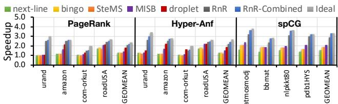
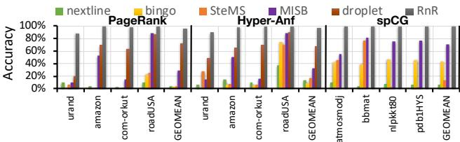
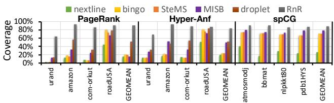
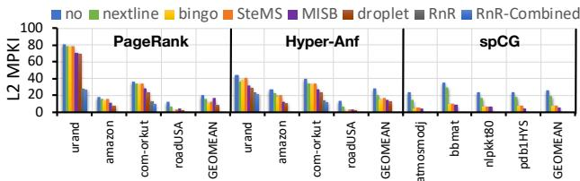

RnR: A Software-Assisted Record-and-Replay Hardware Prefetcher 通俗讲解¶
0. 整体创新点通俗解读¶
痛点直击 (The "Why")
- 传统的 硬件预取器 (hardware prefetcher) 在面对 不规则内存访问模式 (irregular memory access patterns) 时非常“难受”。这类模式常见于图计算（如PageRank）、稀疏矩阵运算（如SpMV）等重要应用中。
- 具体来说，硬件预取器依赖于在运行时动态发现地址间的 空间或时间相关性。但当访问序列很长、很随机，且缺乏重复的短周期模式时，硬件表（如GHB）很容易被相似但不同的模式“混淆”，导致 预测准确率低 和 覆盖度不足。
- 另一方面，软件预取器 (software prefetcher) 虽然可以利用程序员的先验知识，但它需要在代码中插入额外的指令来生成预取地址，这不仅增加了 指令开销 (instruction overhead)，还因为无法感知运行时的缓存和总线状态，难以做到 精准的时机控制 (timeliness)。
通俗比方 (The Analogy)
- 想象你在一家巨大的图书馆（主存）里找书。一个常规的图书管理员（硬件预取器）会根据你最近借过的几本书，猜测你下一本可能要什么。但如果今天你要执行一个非常复杂的、步骤固定的寻书任务（比如，按照一份古老的藏宝图顺序找100本特定的书），而这个任务你明天、后天还要重复做很多次，那么图书管理员每次都要重新猜，效率极低。
- RnR的做法是：在你第一次执行这个复杂任务时，让一个助手（硬件）在旁边 默默记录下你实际去哪些书架（cache miss sequence）以及每一步花了多长时间（timing information）。从第二次开始，这个助手就不再猜了，而是直接 按昨天记下的剧本，提前把书放到你的临时桌（L2 cache）上。你只需要专注于阅读，完全不用操心找书的事。这就像是用一次性的“排练”换取了无数次高效的“正式演出”。
关键一招 (The "How")
- 作者没有试图设计一个更聪明的硬件来“猜”不规则模式，而是巧妙地引入了一个 轻量级的软硬件协同接口，将 “何时记录”、“记录什么”、“何时回放” 的决策权交给了程序员。
- 这个核心思路体现在三个关键设计上：
- 分离关注点: 程序员通过接口明确指定 目标数据结构（如PageRank中的
pcurr数组），这样硬件只需关注这部分的不规则访问，而将规则的访问（如CSR格式的矩阵行指针）留给传统的流式预取器处理，避免了模式混杂的问题。 - 记录与回放机制: 硬件在第一次迭代（Record阶段）只记录 L2 cache miss 的地址序列及其对应的 程序进度信息（通过计数器实现）。在后续迭代（Replay阶段），它直接回放这个序列进行预取，从而实现了 接近100%的准确率。
- 基于窗口的时机控制: 为了确保预取的数据不会因过早而被挤出缓存，也不会因过晚而错过使用时机，RnR将记录的序列划分为多个 窗口 (window)，并记录每个窗口内的 缺失率 (miss ratio)。在回放时，它会根据当前程序执行到哪个窗口，动态调整预取的激进程度，确保预取节奏与程序实际需求完美同步。
- 分离关注点: 程序员通过接口明确指定 目标数据结构（如PageRank中的

Fig. 5. Prefetching timing control example with window size = 3.
最终，RnR通过这种“一次记录，多次精准回放”的策略，在图计算和稀疏迭代求解器等应用上取得了惊人的效果，平均速度提升超过 2倍，并且预取准确率和覆盖率均超过 95%。

Fig. 6. Speedup over no prefetcher baseline.

Fig. 9. Prefetcher accuracy.
1. 软件辅助的记录与回放（Record-and-Replay）机制 (ELI5)¶
痛点直击 (The "Why")
- 传统的 硬件预取器 (hardware prefetcher) 面对 不规则内存访问 (irregular memory access) 时非常“难受”。它们要么依赖简单的空间/步长模式（对不规则数据无效），要么需要复杂的表结构来记录历史访问，但这些表容量有限，无法区分在不同程序阶段发生的、看似相似的长序列。
- 软件预取器 (software prefetcher) 虽然知道程序员的意图，但需要在代码中插入额外的指令来计算和发出预取请求。这不仅增加了 指令开销 (instruction overhead)，还因为软件无法精确感知硬件运行时的动态（如总线拥塞），导致预取时机不准，可能过早（数据被挤出缓存）或过晚（没起到隐藏延迟的作用）。
- 核心矛盾在于：很多重要应用（如图算法、稀疏矩阵迭代求解）的内存访问模式虽然不规则，但在多次迭代中是完全重复的。硬件不知道这个“重复”的语义，而软件又不想/不能高效地承担地址生成和精准调度的任务。
通俗比方 (The Analogy)
- 想象你每天都要走一条非常复杂、没有规律的迷宫去上班。第一次走的时候，你磕磕绊绊，花了很多时间（相当于缓存未命中，性能差）。
- 一个笨拙的向导（传统硬件预取器）试图记住你走过的路，但他记性不好，只能记住最近几步，或者把所有走过的路混在一起记，下次还是会带你走错。
- 如果你自己每次去都得重新画一遍地图并带路（软件预取），那太累了，而且你还得一边看地图一边走路，效率也不高。
- RnR 的做法是：第一次走迷宫时，你带上一个录音笔（记录阶段），把你每一步踩空（缓存未命中）的位置和顺序都录下来。从第二天开始，你就不用自己记路了，而是放录音（回放阶段），让一个专职的、跑得飞快的信使（硬件预取器）听着录音，提前一步把你要踩的砖块（数据）放到你脚下。你只需要专注于走路（执行计算）就行。
关键一招 (The "How")
- 作者并没有试图让硬件变得更“聪明”去预测任意的不规则模式，而是巧妙地引入了一个 轻量级的软件-硬件协同契约。这个契约通过几个简单的API实现：
RnR.AddrBase.set(...): 告诉硬件：“注意，下面这块内存区域（比如PageRank里的pcurr数组）的访问模式很特殊，你要盯紧它”。RnR.PrefetchState.start(): 告诉硬件：“现在是第一次迭代，开始录音！把所有来自这块区域的L2缓存未命中地址按顺序记下来”。RnR.PrefetchState.replay(): 告诉硬件：“后面的迭代开始了，别再录音了，直接按刚才录好的磁带（记录的地址序列）去预取数据吧！”
- 这个设计最精妙的地方在于 职责分离：
- 软件负责提供高层语义：什么时候开始/结束一个重复的阶段（迭代），以及哪个数据结构是目标。这解决了硬件无法理解程序逻辑的根本问题。
- 硬件负责底层执行：高效、及时地记录和回放地址流，并且利用记录下来的窗口内未命中率信息（
Fig. 5. Prefetching timing control example with window size = 3.
）来动态调整预取速度，确保数据既不会太早被挤出去，也不会太晚才到。这解决了软件无法精准控制硬件时序的问题。
- 最终效果就是，对于这类重复的不规则访问，RnR实现了接近完美的 预取准确率 (prefetching accuracy) 和 未命中覆盖率 (miss coverage)（
Fig. 9. Prefetcher accuracy.
和

Fig. 8. Miss coverage.
），从而带来了显著的性能提升（
Fig. 6. Speedup over no prefetcher baseline.
）。
2. 基于窗口的回放时序控制 (ELI5)¶
痛点直击 (The "Why")
- 传统的硬件预取器（如 Next-line, Bingo）在处理 irregular memory access 时，最大的问题不是“猜不准”，而是“送得不是时候”。
- 它们通常在一次 demand miss 后，就一股脑地把预测到的后续地址都发出去。这会导致两个灾难性后果：
- 预取太早 (Too Early)：数据被提前加载到 L2 cache，但程序还没执行到那里。在这段等待时间里，这些宝贵的数据很可能因为 cache capacity eviction 而被其他数据挤出去，等真正要用时又得重新从内存加载，白忙活一场。
- 预取太晚 (Too Late)：如果预取请求发得太保守，等到程序快用到数据时才开始预取，那就完全无法 hide the memory latency，失去了预取的意义。
- 简单说，旧方法是“盲打”，它不知道程序执行的“节奏”有多快，只能凭感觉乱送。
通俗比方 (The Analogy)
- 想象你在给一个马拉松选手递水。你的目标是让他在刚好口渴的时候，手里就有水。
- 旧式预取器的做法是：看到他跑过第一个补给站，就把后面所有补给站的水都一次性扔到赛道上。结果要么水瓶被后面的选手踢飞了（cache eviction），要么他跑到很远才发现水还在起点附近（too late）。
- RnR 的“基于窗口的回放时序控制”则聪明得多。它先跟着选手跑一圈（Record 阶段），详细记录下他在每一段（比如每5公里，这就是一个 window）会喝多少口水（miss ratio）。
- 在正式比赛（Replay 阶段），你就根据这份记录，在他进入下一段路之前，精准地只递给他这一段需要的水量，并且根据他当前的配速（Cur Struct Read counter）来决定什么时候递。这样既不会浪费水（带宽），也能保证他随时有水喝（timely prefetch）。
关键一招 (The "How")
- 作者没有试图去预测复杂的访问模式，而是利用了这类应用（如 PageRank, SpMV）的一个核心特性：重复性 (repeating pattern)。
- 他们做的关键扭转是：将“预取时机”的决策依据，从“猜测未来”转变为“复刻过去”。
- 具体来说，在 Record 阶段，系统不只是简单地记录下所有 L2 miss 的地址序列，还额外做了一件事：
- 将整个访问序列按固定的 window size（例如，每3个未命中为一个窗口）切分成多个窗口。
- 对每个窗口，记录下两个关键元数据：1) 窗口内的 miss addresses；2) 为了产生这些未命中，程序总共执行了多少次对目标数据结构的访问（即 demand accesses）。这个总数直接反映了该窗口的 miss ratio。
- 在 Replay 阶段，硬件预取器内部维护一个计数器（Cur Struct Read），实时追踪程序当前对目标数据结构的访问进度。
- 当这个计数器的值匹配上上一个窗口所记录的 demand accesses 总数时，预取器就知道：“好，上一段结束了，现在该为下一段（下一个窗口）预取数据了”。
- 这样，预取行为就被精确地“锚定”在了程序的实际执行进度上，从而实现了 timely prefetching，完美避免了数据因等待过久而被驱逐的问题。
Fig. 5. Prefetching timing control example with window size = 3.
上图清晰地展示了这个机制的效果。图(b)是无控制的预取，数据被过早加载并可能被驱逐。图(c)和(d)展示了基于窗口的控制如何让预取请求与程序需求完美同步。论文的评估也证实了这一点：

Fig. 10. Effectiveness of replay timing control.
数据显示，加入窗口控制后，性能提升从几乎为零一跃至 2.31x，这正是解决了“timeliness”这一核心痛点所带来的巨大收益。
3. 软硬件协同的轻量级编程接口 (ELI5)¶
痛点直击 (The "Why")
- 传统的 硬件预取器 (hardware prefetcher) 是个“黑盒”，它只能靠自己观察过去的访存模式来猜未来。对于 PageRank 或 SpMV 这类应用，其访存模式是 长且不规则 (long and irregular) 的，但偏偏在每次迭代中又 完美重复。硬件预取器面对这种“一次性长序列”根本记不住，或者会和其他相似模式混淆，导致 准确率 (accuracy) 和 覆盖率 (coverage) 双低。
- 而 软件预取 (software prefetching) 虽然程序员知道模式在哪，但需要在代码里插入额外的 prefetch 指令。这不仅增加了 指令开销 (instruction overhead)，还因为软件无法感知底层内存系统的实时状态（比如总线是否拥堵），很难做到 及时 (timely) 预取，可能取早了被挤出缓存，取晚了又没用。
通俗比方 (The Analogy)
- 想象你要在一个巨大的、布局混乱的仓库（主存）里反复找一批特定的零件（数据）。每次任务（迭代）要找的零件清单和顺序都一模一样，但清单太长，你没法全记住。
- 传统硬件预取器 就像一个只凭经验猜测的仓库管理员。他看到你拿了A，就猜你下一个要拿B或C，但在混乱的仓库里，他的猜测经常出错。
- 软件预取 就像你自己拿着清单，一边干活一边大声喊：“管理员，帮我把第100个零件先准备好！” 但你喊话本身耽误时间，而且管理员可能正忙着处理别人的请求，等他拿到时你已经不需要了。
- RnR的轻量级接口 则像是你给了管理员一个 对讲机 和一份 精确的操作手册。你第一次执行任务时，告诉管理员：“现在开始录音，记下我每次找不到零件时去的货架号”。任务结束后，你告诉他：“下次任务开始时，你就按录音里的顺序，提前把那些货架的零件放到我的工作台（L2 cache）上。” 管理员（硬件）只需要忠实回放，而你（软件）只需在关键节点发几个简单的指令（开始录音、开始回放、结束）。
关键一招 (The "How")
- 作者并没有试图让硬件变得更聪明去识别复杂模式，而是巧妙地 将“模式识别”的责任交还给最了解程序的软件，同时为硬件提供了一个 极简的控制通道。
- 这个通道就是一组 特殊的体系结构寄存器 (special architectural registers)，它们构成了软硬件之间的 轻量级编程接口。通过这个接口，软件可以精确地：
- 划定空间范围：通过设置
boundary checking address registers，告诉硬件“只关心这个地址范围内的数据结构（比如 pcurr 数组）”，从而过滤掉无关的、有规律的访存（如矩阵的行指针），让硬件专注处理真正的不规则访问。 - 控制时间节奏：通过操作
prefetch state register（如调用RnR.PrefetchState.start()和RnR.PrefetchState.replay()），明确指示硬件“现在是第一次运行，开始记录缓存未命中序列”和“接下来的迭代都是重复的，开始回放预取”。 - 传递元数据位置：通过
base address register for a Sequence Table等寄存器，直接告诉硬件“把记录下来的数据（miss sequence）存在内存的这个位置”，以及“用来控制预取节奏的窗口信息表在那个位置”。
- 划定空间范围：通过设置
- 这个设计的关键扭转在于：用几个简单的寄存器写操作，替代了复杂的在线模式学习和大量的指令插入。硬件不再需要庞大的模式表和复杂的匹配逻辑，它变成了一个高效的“录音机”和“播放器”，而软件则扮演了“导演”的角色，在最合适的时机发出最关键的指令。这种分工使得系统既能获得接近100%的预取准确率，又避免了软件预取的性能开销。

Fig. 3. State transition diagram of the RnR prefetch state.
4. 私有L2缓存未命中序列记录 (ELI5)¶
痛点直击 (The "Why")
- 传统的硬件预取器（如基于GHB的时序预取器）试图从所有内存访问中学习模式，但这在处理像图计算或稀疏矩阵乘法这类应用时会“很难受”。
- 这些应用的内存访问流是混合的：既有对矩阵/边列表的规则、流式访问（能被L1/L2缓存轻松捕获），也有对顶点值/向量的不规则、跳跃式访问（才是真正导致长延迟的罪魁祸首）。
- 如果预取器记录所有访问，它会被大量“无用”的规则访问淹没，不仅浪费宝贵的元数据存储空间，还会因为模式混淆而降低对真正不规则模式的预测准确率。这就像在一个嘈杂的房间里，你很难听清一个特定人的低语。
通俗比方 (The Analogy)
- 想象你要为一位演讲者准备他下一页PPT要用的资料。一个笨办法是把他翻过的每一页书、看过的每一个网页都记下来，然后下次照做一遍。但其实，他大部分时间都在看自己已经背熟的讲稿（相当于L1/L2缓存命中的数据），真正需要你提前准备的，是他偶尔才会去查证的几份外部参考资料（相当于L2缓存未命中的数据）。
- RnR的做法很聪明：它只在演讲者第一次伸手去拿场外资料（L2 Miss）的时候才开始记录。这样，你的备忘录就非常精简、精准，全是干货，下次重演时效率极高。
关键一招 (The "How")
- 作者并没有尝试去记录和分析整个程序的完整内存访问序列，而是巧妙地将观察点下沉到了私有L2缓存这一层。
- 具体替换逻辑如下：
- 旧流程：监控所有内存请求 -> 尝试从中找出通用模式 -> 预取。
- 新流程：监控所有内存请求 -> 先让L1/L2缓存过滤一遍 -> 只记录那些连L2都没能拦住的“漏网之鱼”（L2 Misses） -> 针对这些“硬骨头”进行记录和重放预取。
- 这个设计一举两得：
- 过滤噪声：利用现有的缓存层次结构，自动滤除了具有良好时空局部性的访问，使得记录下来的序列纯粹是那些真正不规则、难以预测的访问模式。
- 聚焦痛点：预取器的精力和存储资源全部集中在最需要帮助的地方，从而实现了论文中提到的超过95%的预取准确率和缺失覆盖率。

Fig. 7. L2 MPKI.
这张图清晰地展示了RnR如何大幅降低L2的MPKI（每千条指令缺失数），其效果远超其他预取器。
5. 与现有预取器的集成设计 (ELI5)¶
痛点直击 (The "Why")
- 传统的硬件预取器（如流式、步长预取器）在处理规则内存访问时非常高效，但面对不规则、重复的访问模式（如图计算、稀疏矩阵运算）时，要么完全失效，要么准确率极低。
- 如果强行让一个通用预取器去处理所有类型的访问，它会在不规则数据上产生大量无用预取 (useless prefetches)，不仅浪费带宽，还会污染缓存，反而拖慢性能。
- 反之，如果只用 RnR 这种针对不规则模式的专用预取器，又会错过对规则数据进行高效预取的机会，顾此失彼。
通俗比方 (The Analogy)
- 这就像一个高效的工厂流水线。对于标准化的零件（规则访问），我们有专门的、高速的自动化机械臂（传统硬件预取器）来处理，又快又准。
- 但对于一些形状奇特、需要手工精雕细琢的定制件（不规则访问），自动化机械臂就束手无策了。这时候，我们需要一位经验丰富的老师傅（RnR 预取器），他先看一遍图纸（Record），记住每一个步骤，然后在后续批量生产时（Replay），就能完美复现。
- 最聪明的做法不是让老师傅去干所有活，也不是让机械臂去碰定制件，而是明确分工：在流水线上设置一个分拣器，把标准件和定制件分开，各自交给最擅长的人/机器去处理。
关键一招 (The "How") 作者并没有试图用 RnR 替代所有预取器，而是巧妙地在系统中引入了一个基于地址范围的过滤机制，实现了无缝协同：
- 第一步：划定“责任田”。程序员通过轻量级接口，明确告诉硬件：“从地址 A 到 B 的这片内存区域，存放的是不规则访问的数据结构，请交给 RnR 处理。”
- 第二步：智能分流。在 CPU 发出内存请求时，硬件会先检查这个请求的地址是否落在 RnR 的“责任田”内。
- 如果在范围内，则该请求及其后续的缺失（miss）由 RnR 负责记录和重放预取。
- 如果不在范围内，则该请求被完全排除在 RnR 的逻辑之外，可以自由地被现有的流式预取器 (Next-line) 或其他通用预取器捕获和处理。
- 第三步：并行不悖。通过这种设计，RnR 和传统预取器可以同时工作，互不干扰。RnR 专注于解决最难啃的硬骨头（不规则访问），而传统预取器则继续高效地处理它们擅长的常规任务。

Fig. 4. RnR system architecture.
这种集成方式的关键优势在于其极低的侵入性和极高的效率。它不需要修改现有预取器的任何逻辑，只是增加了一个简单的地址过滤层，就实现了“专业的事交给专业的人做”的效果，从而在整体上最大化了预取系统的性能和资源利用率。